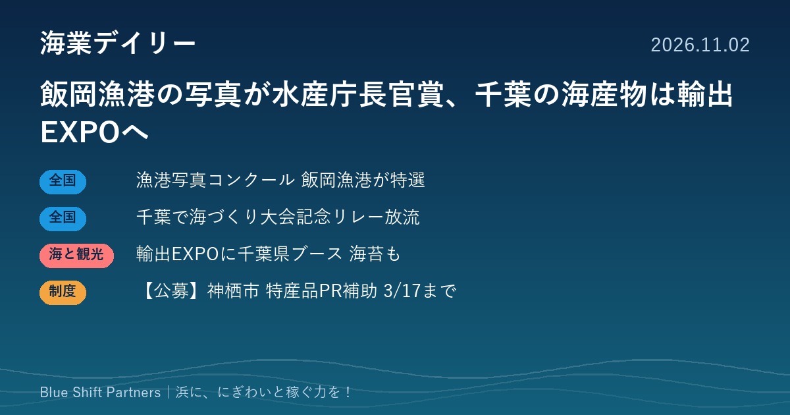

2026.11.02
飯岡漁港の写真が水産庁長官賞、千葉の海産物は輸出EXPOへ

全国漁港漁場協会の写真コンクールで、千葉県の飯岡漁港を写した作品が特選2席に選ばれました。千葉県は輸出商談会への県ブース出展や、来年の全国豊かな海づくり大会に向けたリレー放流を進めています。茨城県神栖市からは、特産品のPRを後押しする補助金の案内です。
漁港漁場漁村海岸写真コンクール、飯岡漁港の作品が水産庁長官賞
公益社団法人全国漁港漁場協会は、2026年漁港漁場漁村海岸写真コンクールの入賞作品を発表しました。応募216作品の中から、特選1席（農林水産大臣賞）に宮城県塩釜漁港の「塩竈みなと祭」、特選2席（水産庁長官賞）に千葉県飯岡漁港の「港を埋める漁船たち」が選ばれました。特選3席には、千葉県新浜海岸の「ハマグリ漁師を見守る海鳥達」も入っています。
ここがポイント：漁港の風景や漁の営みは、それ自体が人を呼ぶ観光資源です。入賞作品のような写真は、漁協や自治体がSNSやパンフレットで浜の魅力を伝えるときの良い手本になります。
出典：公益社団法人 全国漁港漁場協会「2026年漁港漁場漁村海岸写真コンクールの入賞作品」（2026-10-28）
千葉県、全国豊かな海づくり大会に向けて11月に県内各地でリレー放流
千葉県は、令和9年11月14日に開催予定の第46回全国豊かな海づくり大会に向け、大会記念リレー放流を令和8年11月に県内各地で行うと発表しました。銚子市の1年前プレイベント「豊かな海づくりフェスタ」、千葉市の千葉湊大漁まつり、旭市や南房総市の地域のまつりと連携するほか、九十九里町や君津市などの小学校でも稚魚の放流体験を行います。リレー放流は11月末で終了する予定です。
ここがポイント：大会を1年後に控え、浜のまつりと放流体験を組み合わせる動きが県内各地で広がります。漁協や地元の事業者にとっては、海の恵みと担い手の姿を地域の人に知ってもらう機会になります。
出典：千葉県 農林水産部水産課「第46回全国豊かな海づくり大会『大会記念リレー放流』を実施します」（2026-10-28）
千葉県が「日本の食品」輸出EXPOに県ブース、県漁連の海苔も出展
千葉県は、成田市と共同で「第13回“日本の食品”輸出EXPO」に県ブースを出展すると発表しました。会期は令和8年11月11日から13日まで、会場は東京ビッグサイト東7ホールです。出展者には、千葉県漁業協同組合連合会のり加工事業所（富津市）の海苔や、成田市公設地方卸売市場の水産物などが含まれます。
ここがポイント：海外の買い手と直接話せる商談会は、浜の加工品の販路を広げる入口です。県や市の共同ブースを使えば、小さな事業者でも出展の負担を抑えられるため、次回に向けて自治体の募集時期を押さえておく価値があります。
出典：千葉県 報道発表「『第13回“日本の食品”輸出EXPO』への出展について」（2026-10-30）
【公募】茨城県神栖市 地域特産品開発事業補助金（2027年3月17日まで）
茨城県神栖市は、市の地域特産品に認定された商品のPRを支援する補助金の申請を受け付けています。対象は市内に住所があり、市税の滞納がない個人・法人・団体で、パンフレットの作成・印刷費、イベントへの参加料、ホームページ作成費などが対象経費です。補助率は2分の1以内、上限は1事業者あたり10万円で、申請期限は2027年3月17日、申請先は市の企業港湾商工課です。事業を始める前に申請し、交付決定を受けてから着手する必要があります。
ここがポイント：浜の水産加工品などが市の特産品に認定されていれば、そのPRに使えます。土産物のパンフレットづくりや物産イベントへの出店費用に充てられます。
出典：神栖市「地域特産品開発事業補助金」（2026-10-28）
写真コンクールで選ばれた飯岡漁港は、海業の推進に取り組む地区のひとつです。漁船が港を埋める光景のように、浜の日常には人を引きつける力があります。写真や物産展、補助金を組み合わせて、その魅力を外に届ける一歩を考えてみてはいかがでしょうか。